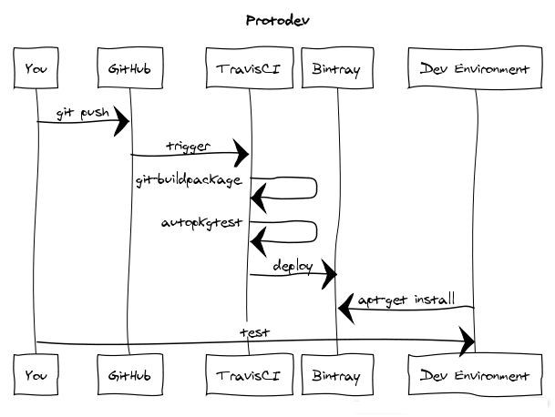

Protodev
The prototev stack provides an APT repository containing your GitHub managed Debian packages.

Using this stack you can push your packages to GitHub, TravisCI builds and tests them, on successful builds they get published to Bintray.
This helps catch issues as early as possible and avoids having to run long package builds on one's own computers.
How it works
First, protodev detects which release of Debian the branch is targeting based on the current branch name. The experimental suite and all varieties of backports are intelligently detected.
A throwaway Docker image is then created containing all the required build-dependencies. The package is then built in this isolated environment with no access to the internet.
Lintian is run on the result and the binary packages are saved to the parent directory.
On successful builds the Bintray provider is triggered, and the package is uploaded to your APT repository.
Usage
Frequently asked questions
Q: But wget | bash - is insecure!
A: Of course, and you should never run such a command on your own machine. However, not only does Travis-CI build within throwaway containers that you are not responsible for, cannot trust, and generally don't care about, there is zero expectation that the resulting .deb files are to be used or installed in a production environment.
Package build inspired by travis.debian.net